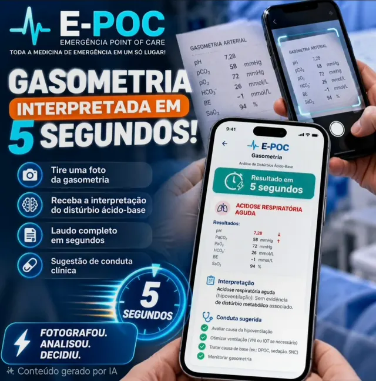
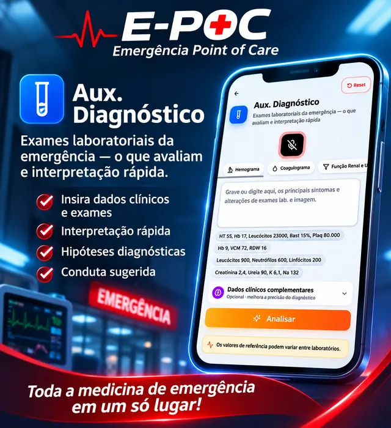
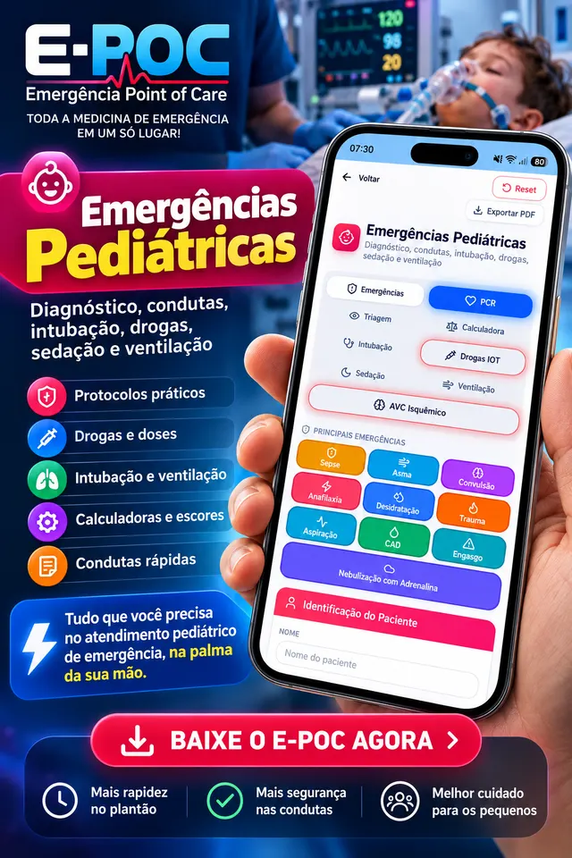
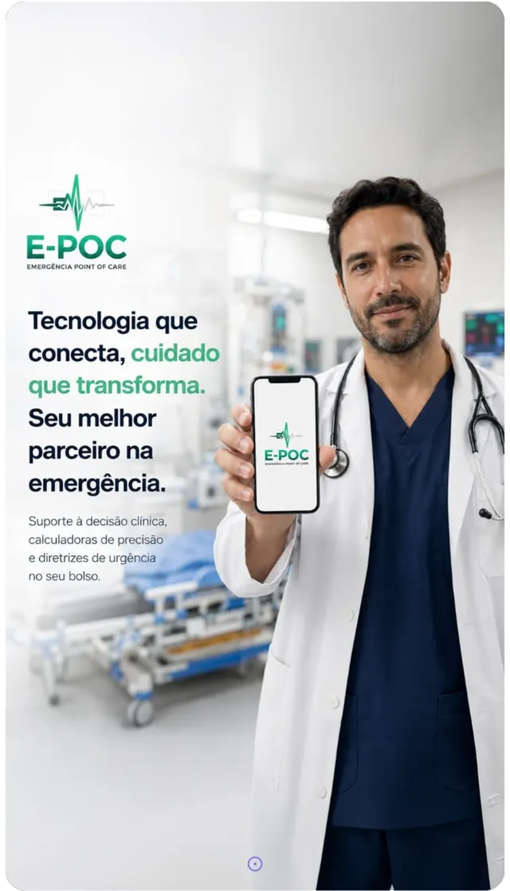

App de medicina de emergência
Quando o tempo importa, a decisão tem que ser rápida.
PCR guiada por voz, +90 calculadoras, escores e protocolos e o relatório pronto para o prontuário em segundos. Tudo em um só app, feito para quem decide sob pressão.
+3 mil atendimentos apoiados pelo E-POC em salas de emergência de todo o Brasil.
PCR EM CURSOAdulto · Ciclo 3
Tempo de PCR
06:12
Ritmo chocável · FV/TV sem pulso
Próxima checagem de ritmoRCP de alta qualidade · 100–120/min
01:48
Choque 200 J bifásico05:58
Adrenalina 1 mg IV04:01
Amiodarona 300 mg IVagora
“Amiodarona feita”
Gasometria por fotointerpretada em segundos
Relatório no prontuáriodo celular ao desktop em 1 s
Dose → mL/h na bombainforme o peso e pronto
PCR GuiadaProtocolo SEPSEProtocolo AVCIAM com Supra STHEART ScoreSRI · IntubaçãoDrogas VasoativasNIHSSGasometriaCetoacidose DiabéticaAnafilaxiaGlasgowVentilação MecânicaPOCUSManual do ECGSedoanalgesiaTrombóliseATLSEmergência Ped. + PCRAntídotosPCR GuiadaProtocolo SEPSEProtocolo AVCIAM com Supra STHEART ScoreSRI · IntubaçãoDrogas VasoativasNIHSSGasometriaCetoacidose DiabéticaAnafilaxiaGlasgowVentilação MecânicaPOCUSManual do ECGSedoanalgesiaTrombóliseATLSEmergência Ped. + PCRAntídotos
O plantão não espera
Cada minuto procurando a dose é um minuto a menos com o paciente.
PDFs, abas abertas, grupos de WhatsApp e conta de cabeça. O E-POC reúne tudo o que você consulta na emergência em um lugar, organizado para a beira do leito.
Plantão sem o E-POC hoje
Busca espalhada entre PDFs, sites, livros e grupos
Diluição e vazão da bomba calculadas na mão
Cronômetro e doses da PCR controlados de cabeça
Relatório digitado no fim do plantão, de memória
Dúvida se a conduta segue a diretriz mais recente
Plantão com o E-POC agora
+90 ferramentas em um app, com busca rápida
Informe o peso: dose, diluição e mL/h prontos
PCR guiada por voz com cronômetro, doses e checklist
Relatório técnico no desktop em 1 segundo
Atualização automática de diretrizes e consensos
Recursos
Tudo o que você precisa na sala de emergência
Como diagnosticar, como tratar, como diluir, como administrar. Tudo passo a passo, para consulta rápida durante o plantão.
Tempo de PCR06:12
Próximo ciclo01:48
Adrenalina×2
Choques3
AdultoPediatriaGestanteAfogamento
“Ritmo chocável, choque aplicado”
01 · PCR INTERATIVA
PCR guiada por voz, com as mãos livres para o paciente
Suporte à parada cardiorrespiratória em tempo real, por comando de voz. Você fala, o E-POC cronometra, lembra as doses e registra cada etapa.
Cronometragem, doses e checklist automáticos
Adulto, pediatria, gestantes e vítimas de afogamento
Registro completo para o relatório final

02 · GASOMETRIA POR FOTO
Fotografou. Analisou. Decidiu.
Tire uma foto da gasometria e receba a interpretação do distúrbio ácido-base na hora, com laudo completo e sugestão de conduta.
Interpretação do distúrbio ácido-base em segundos
Laudo completo pronto para registrar
Sugestão de conduta clínica

03 · AUXILIAR DE DIAGNÓSTICO
Fale os achados. Receba as hipóteses diagnósticas.
Fale ou digite sinais, sintomas e alterações laboratoriais ou de imagem. O E-POC organiza a interpretação e sugere as hipóteses diagnósticas.
Hemograma, coagulograma, função renal e mais
Entrada por voz ou texto
Hipóteses e conduta sugerida

04 · EMERGÊNCIAS PEDIÁTRICAS
Protocolos e doses organizados por idade e peso
Diagnóstico, condutas, intubação, drogas, sedação e ventilação para o atendimento pediátrico de emergência, na palma da mão.
PCR pediátricaDrogas de IOTAsmaConvulsãoSepseCADAnafilaxiaTrauma
Calculadoras e bomba de infusão
Calculadoras adulto e pediátrica com conversão automática para mL/h.
7 dias grátis · Funciona no celular e no computador

Veja em ação
Mãos no paciente. O resto, o E-POC faz.
Veja o E-POC funcionando em diferentes cenários da emergência: da PCR à prescrição, com o relatório chegando ao computador antes de você tirar as luvas.
Comandos de voz durante o atendimento
Protocolos de Sepse, AVC e Dor Torácica passo a passo
Relatório técnico copiado direto para o prontuário
Use o E-POC completo por 7 dias no seu plantão real. Se não fizer diferença, é só não assinar.
Dúvidas frequentes
Perguntas sobre o E-POC
Como funciona o teste grátis de 7 dias?
Você cria sua conta e usa o E-POC completo por 7 dias, no celular e no computador. Depois do período de teste, escolhe o plano que cabe no seu ritmo de plantão: mensal ou anual.
Quem pode usar o E-POC?
O uso é restrito a médicos e estudantes de medicina. Para a enfermagem de urgência existe a plataforma Top Nurse, do mesmo ecossistema.
Funciona no iPhone, no Android e no computador?
Sim. O app é compatível com iOS e Android e tem versão web para desktop. Celular e computador ficam sincronizados em tempo real.
Como o relatório chega ao prontuário?
Ao final do atendimento o E-POC gera um relatório técnico, com linguagem médica revisada, e envia automaticamente para a versão desktop. Basta copiar e colar no prontuário.
O conteúdo do app é atualizado?
Sim. As diretrizes são atualizadas automaticamente e o app avisa quando há conteúdo novo, como novos consensos e guidelines.
O E-POC substitui o julgamento clínico?
Não. O E-POC é uma ferramenta de apoio à decisão baseada em diretrizes vigentes. A conduta final é sempre do médico responsável pelo paciente.
Seu próximo plantão
Chegue ao próximo plantão com a emergência inteira no bolso.
PCR guiada por voz, +90 ferramentas e relatório pronto para o prontuário. Teste grátis por 7 dias.